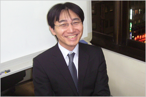
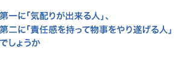

竹内 慎理
2003.04 入社

簡単に経歴紹介をお願いします。
新人研修（３ヶ月）を終え、新橋本社で３ヶ月間勤務した後、約１０年前に お客様の社内福利厚生関係のシステム開発のプログラマとして参画し、現在はシステムエンジニアとして開発とメンテナンス 両方の業務を行っています。
学生時代から、コンピュータに興味があり、プログラムを作っていたのですか？
学生時代に勉強をしていましたが、本格的にプログラムを作成したのは入社後になります。
入社後の新人研修でプログラムの基本的な考え方をしっかりと身に付けることが出来れば、どんな言語であっても応用が利くのではないかと思います。今でも、まだまだ力不足と感じることもあり、学習は継続中です。
実際の設計、開発はどのように進めるのですか？
お客様から、データ構造や伝票の出力形式、画面構成を追加、変更して欲しい等の要望があります。その要望を実現するために現在のデータ構造、設計思想などの理論的な部分の見直し、修正や追加が必要なコードの抽出、処理時間の妥当性などの技術的な事柄の検討と進めます。その後、詳細設計書の作成、プログラムの作成、プログラムの単体、結合テストを実施し、テスト結果の報告書を作成します。自分は、このテスト結果をお客様に説明するときが一番“どきどき”しますね。
仕事をする上で大切な事は？
担当しているシステムの開発時は、１０人から１５人で作業しましたが、現在は安定稼動しており、メンテナンスが主な業務ですので、１～２人で作業することが多いです。
また、他システムのメンテナンス作業にもかかわります。この場合も、５人程度の人数となります。複数人で作業する場合は、特にメンバー間で機能実現に向けた話し合いや状況報告が必要になります。
仕事をする上では、一人であっても、複数人であっても、大切な事は「自分自身に任された作業は、最後まで責任を持って行う事」と思います。
職場に迎えるなら、どんな性格、能力を持つ後輩が良いですか？
技術面に関しては研修、仕事を通して身につくはずですので、第一に「気配りが出来る人」、第二に「責任感を持って物事をやり遂げる人」でしょうか。
お客様の依頼や先輩からの指示に対して「作業状況の報告がない」、さらには「いい加減な仕事する」人とは、職場で大切な信頼関係を築くことが出来ません。